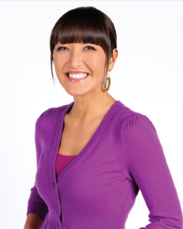

Candice is from San Diego and grew up living the life of a true California girl—surfing, sunshine, hanging at the beach, and having fun. As a teen, she became a fashion model and spent eight years traveling the nation and the world on assignments. But despite the glamour of modeling, she always felt deep down that her true calling in life was cooking.
Her mother, a graduate of Tokyo Gakugei University, was born in southern Japan and her father is a Naval veteran of Polish-American descent. She learned the essentials of those culinary traditions from her mother and grandmothers. After earning a bachelor’s degree she decided to pursue cooking professionally and did so at the prestigious Le Cordon Bleu California School of Culinary Arts Program, where she won honors as “Top of the Class,” President’s List, and Dean’s List.
Candice has since cooked at several well-respected restaurants in Los Angeles and Orange County, such as the Ritz Carlton Laguna Niguel, and she worked for Chef Wolfgang Puck. She has appeared on Bravo’s Top Chef, where her upbeat personality, charm, and cooking talents won her many fans. Her dream is to follow in the footsteps of her idols Julia Child and Martha Stewart and become the food/lifestyle guru of her generation. She brings as much passion and flair to cooking as she does to everything in life—her ideal is to bring together all of the things she loves: fashion, friends, and great food.